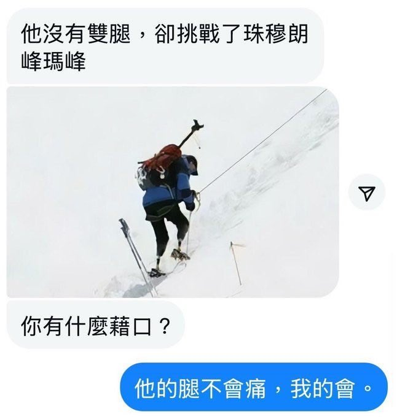

对方：
你还是在找借口。截肢登山家的腿真的不会痛吗？你错了。没有双腿的他受到来自腿部的疼痛，比拥有双腿的还要大得多。
截肢者虽然失去了小腿和双脚，但仍会出现残肢痛和幻肢痛。残肢痛，是截肢后剩余肌肉、骨骼、皮肤部分的疼痛；至于幻肢痛，它可不是什么心理作用，而是神经系统以为 不存在的肢体受到伤害，而产生的真实的疼痛。
除了上述两种疼痛以外，登山时，身体重量和冲击力集中在残肢与义肢接受腔接触的位置，也容易容易产生摩擦、压力性溃疡、肿胀，进而感到疼痛。中国登山家夏伯渝在登顶珠峰后，下降时就遇到了残肢肿胀，导致义肢适配困难de问题。
你真的还觉得你感受到的痛会比截肢登山家厉害吗？
你还是在找借口。截肢登山家的腿真的不会痛吗？你错了。没有双腿的他受到来自腿部的疼痛，比拥有双腿的还要大得多。
截肢者虽然失去了小腿和双脚，但仍会出现残肢痛和幻肢痛。残肢痛，是截肢后剩余肌肉、骨骼、皮肤部分的疼痛；至于幻肢痛，它可不是什么心理作用，而是神经系统以为 不存在的肢体受到伤害，而产生的真实的疼痛。
除了上述两种疼痛以外，登山时，身体重量和冲击力集中在残肢与义肢接受腔接触的位置，也容易容易产生摩擦、压力性溃疡、肿胀，进而感到疼痛。中国登山家夏伯渝在登顶珠峰后，下降时就遇到了残肢肿胀，导致义肢适配困难de问题。
你真的还觉得你感受到的痛会比截肢登山家厉害吗？
